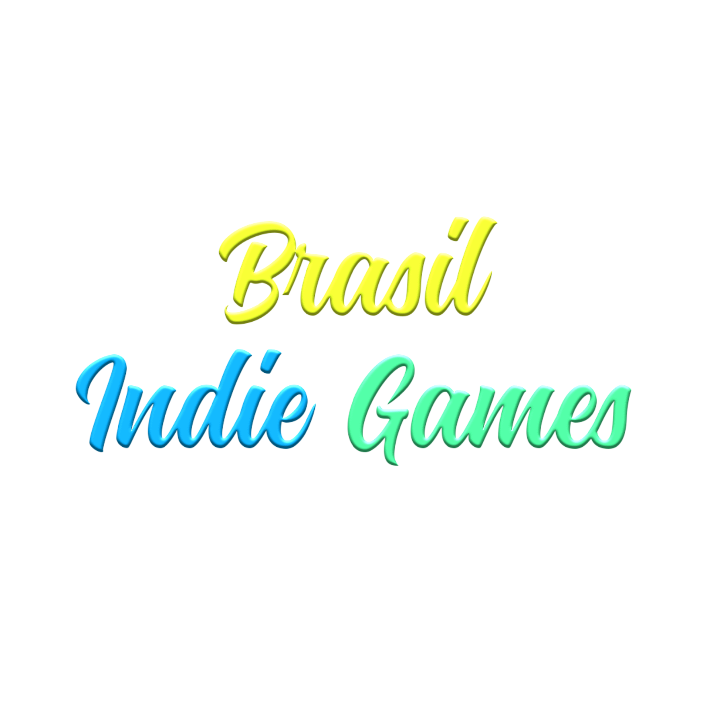

Jogos Incríveis Feitos por Youtubers
A Lenda do Herói, um jogo em pixels com um grande diferencial a sua trilha sonora dinâmica e bem-humorada - composta e interpretada pelos Castro Brothers - que narra os feitos do jogador e responde a seus comandos, tornando-se um elemento-chave para a progressão da história. O jogo é a pareceria dos Castros Brothers com a Dumativa, que é conhecida por seus trabalhos que se destacam pela jogabilidade, qualidade de gráficos e trilha sonora.
Outro jogo em parceria com a Dumativa é o Ordem Paranormal: Enigma do Medo que é um jogo de enigmas e terror criado pelo Rafael Lange (Cellbit). O universo de Ordem Paranormal teve início em um RPG de mesa, transmitido ao vivo. Ordem Paranormal é um jogo com financiamento coletivo que em cinco horas após o anuncio superou a primeira meta de R$ 500 mil, ele ainda está aberto para apoios.